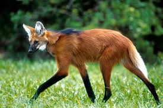
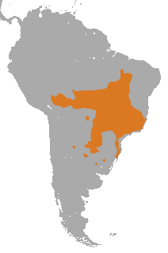

Lobo guará
Nome científico: (Chrysocyon brachyurus Illiger, 1815)
Nome comum: Lobo guará.
Classificação biológica:
Domínio: Eukaryota.
Reino: Animalia.
Filo: Chordata.
Classe: Mammalia.
Ordem: Carnivora.
Família: Canidae.
Gênero: Chrysocyon.
Espécie: Chrysocyon brachyurus.
Nutrição: Onívoro.
Hábitos alimentares: Alimenta-se de pequenos mamíferos, aves, répteis, insetos e frutas, como a lobeira.
Morfologia do corpo: Possui pernas longas e esguias, pelagem avermelhada com partes pretas e uma mancha branca na garganta. Mede entre 95 e 115 cm de comprimento, com uma cauda de 30 a 50 cm. Pesa entre 20 e 30 kg.
Comportamento: É um animal solitário e de hábitos crepusculares e noturnos. Marca território com urina e vocaliza para comunicação.
Principais Presas: Pequenos mamíferos, aves, répteis e insetos.
Principais Predadores: Não possui muitos predadores naturais, mas pode ser ameaçado por onças e por ação humana.
Locais habitados
Distribuição:Vive nos biomas Cerrado, Mata Atlântica, Pantanal e Pampa.
Habitat: Prefere campos abertos, savanas e áreas de transição entre florestas e pastagens.
Reprodução: A gestação dura cerca de 60 a 65 dias, resultando em ninhadas de 2 a 6 filhotes, que permanecem com a mãe até atingirem independência.